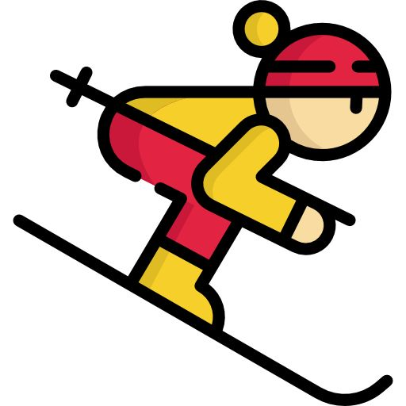
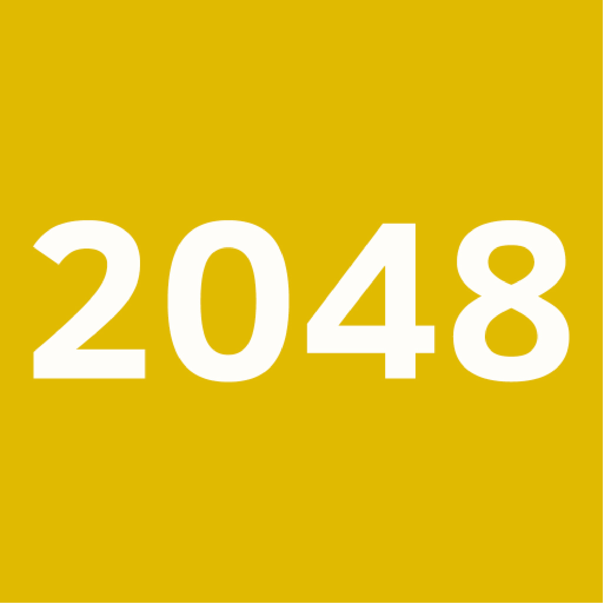

UI Lab
UI Diseño y Desarrollo de Interfaz Dinámica
Diseña, desarrolla y comparte experiencias web.
Un laboratorio de interfaces web
UI Lab es un laboratorio de diseño y desarrollo de interfaces web donde los estudiantes comparten sus proyectos finales de la materia UI — Diseño y Desarrollo de Interfaz Dinámica. Aquí encontrarás animaciones, minijuegos y otras experiencias web que combinan creatividad, diseño y programación.
Profesor: Lic. Amancio Torres Cruz
Licenciatura en Diseño Digital de Medios Interactivos - Universidad Autónoma de Ciudad Juárez.
Proyectos del semestre 2026-2
Minijuegos

Line Rider
Leonardo Lozano · 217859

Flappy Bird
Jorge Antonio Quiroz Resendiz · 238552

2048
Esteban de Jesus Torres Valdez · 220066

Laberinto
José Ignacio López Estrada · 204611
SNAKE MINES
José Antonio Gómez Hurtado · 235299

Princess Daisy Run
Luis Eduardo Rangel Sanchez · 227797

Luigi’s Poker Night
Braulio Cárdenas Molina · 239257